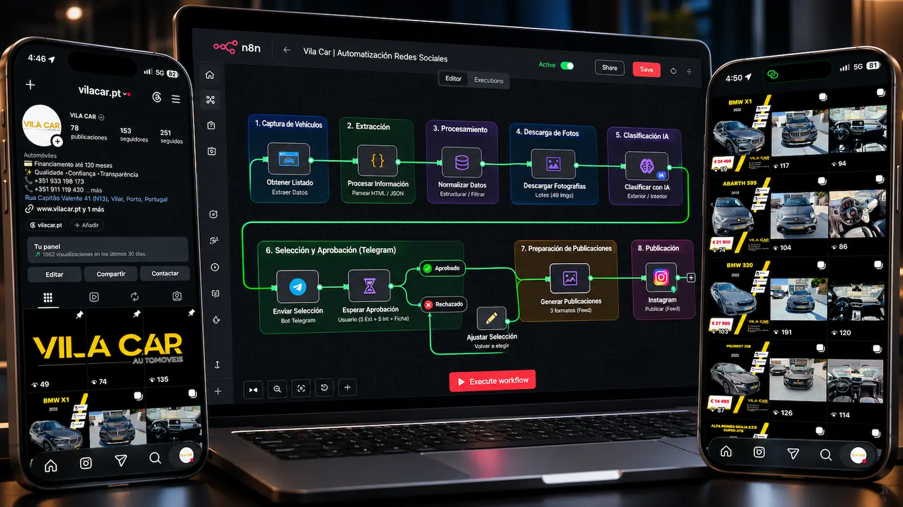
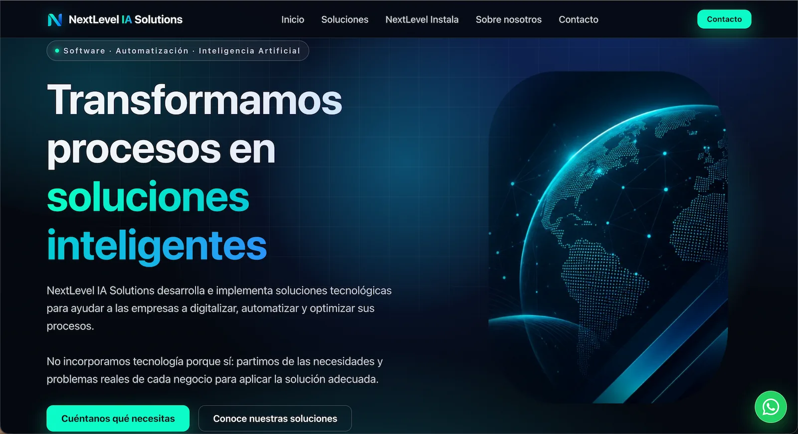
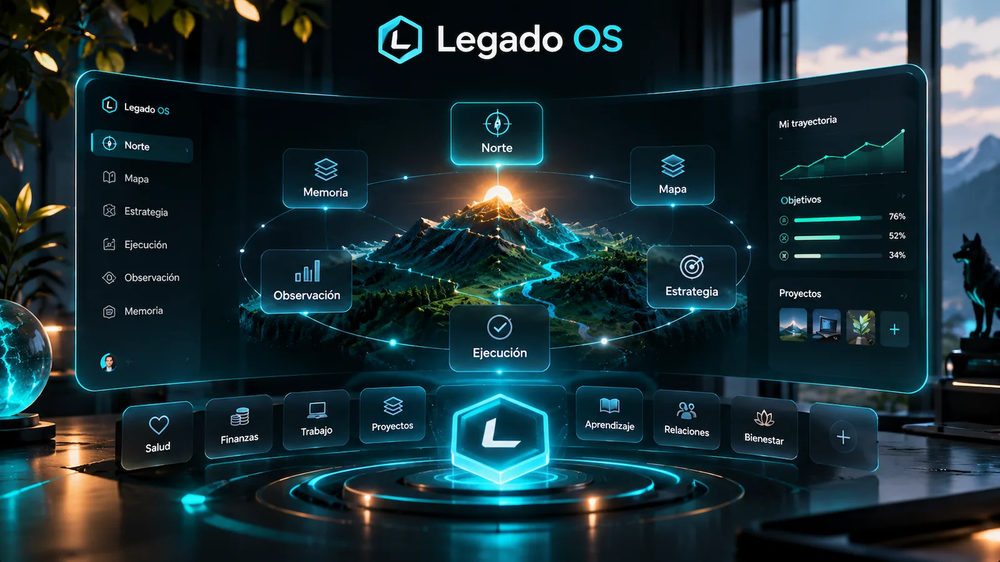
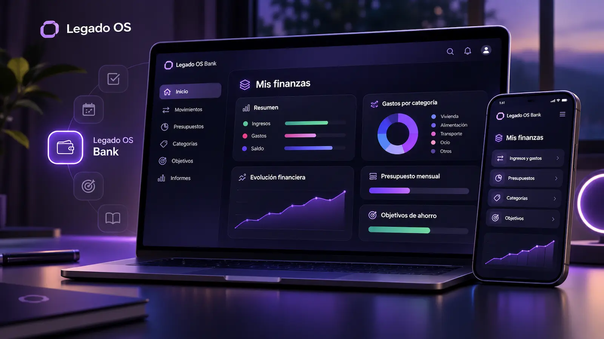

Hacemos que la tecnología trabaje para tu negocio.
Guido

Menos complejidadmás posibilidades
Convertimos necesidades empresariales en soluciones digitales. Combinamos estrategia, software, automatización e inteligencia artificial para crear sistemas que ayudan a las empresas a funcionar mejor y crecer.
Proyectos seleccionados
-
Automatización digital

Vila Car
Automatización de contenidos para redes sociales que simplifica la preparación de publicaciones.
-
Desarrollo web

NextLevel
Presencia digital corporativa para comunicar servicios tecnológicos de forma clara y profesional.
-
Salud digital · Sin fines de lucro
EscalPa
Iniciativa sin fines de lucro que busca facilitar el acceso a la atención médica mediante consultas virtuales.
-
Ecosistema digital inmersivo

Legado OS
Un espacio digital inmersivo para organizar proyectos, conectar conocimiento y transformar la manera de trabajar.
-
Finanzas personales

Legado OS Bank
Aplicación concebida para organizar y gestionar las finanzas personales dentro del ecosistema Legado OS.
Tecnología que evoluciona contigo
-
Capítulo 01
Todo empieza por entender
Antes de crear una solución, necesitamos comprender el negocio y lo que realmente necesita mejorar.
-
Capítulo 02
Después, encontramos el camino
Conectamos estrategia y tecnología para transformar problemas reales en oportunidades.
-
Capítulo 03
Construimos algo que funciona
Diseñamos sistemas que simplifican el trabajo y aportan valor desde su implementación.
-
Capítulo 04
El negocio sigue avanzando
Las necesidades cambian. La tecnología debe poder adaptarse y acompañar ese crecimiento.
-
Capítulo 05
Y volvemos a mejorar
Medimos, aprendemos y optimizamos. Porque una buena solución no termina cuando se entrega.
Qué hacemos
Diseñamos y construimos soluciones tecnológicas que ayudan a las empresas a trabajar mejor, vender más y crecer.
-
Desarrollo web y aplicaciones
Creamos páginas web, aplicaciones y plataformas digitales que ayudan a las empresas a captar clientes, ofrecer servicios y crecer.
-
Automatización de procesos
Conectamos herramientas y automatizamos tareas repetitivas para reducir trabajo manual, ahorrar tiempo y mejorar las operaciones.
-
Inteligencia artificial aplicada
Incorporamos inteligencia artificial en procesos reales para analizar información, asistir a los equipos y automatizar operaciones.
-
Sistemas empresariales
Diseñamos sistemas que conectan clientes, información y operaciones para que las empresas trabajen de forma más organizada y eficiente.
-
Crecimiento digital
Construimos soluciones digitales que ayudan a las empresas a atraer oportunidades comerciales, gestionar contactos y convertirlos en clientes.


Cómo trabajamos
No empezamos por la tecnología. Empezamos por entender tu negocio, identificar qué necesita mejorar y construir la solución adecuada.
01 — Entender
Analizamos tu negocio, tus objetivos y tus procesos para identificar problemas reales y oportunidades de mejora.
02 — Diseñar
Definimos la solución, las herramientas necesarias y los resultados que queremos conseguir antes de desarrollar.
03 — Construir
Desarrollamos, integramos y ponemos en funcionamiento la solución, comprobando que responda a las necesidades del negocio.
04 — Evolucionar
Medimos los resultados, identificamos mejoras y evolucionamos la solución según las necesidades de cada empresa.
Ideas y talento
En Guido combinamos estrategia, desarrollo tecnológico y colaboración especializada para construir soluciones que responden a las necesidades de cada negocio.


- Colaboremos.
- Creemos que las mejores soluciones nacen cuando se unen diferentes ideas, experiencias y capacidades. En Guido estamos abiertos a colaborar con profesionales y empresas que quieran crear, innovar y desarrollar proyectos con impacto real.
Ideas que impulsan
Exploramos ideas, tendencias y soluciones tecnológicas que pueden transformar la manera de trabajar, innovar y hacer crecer un negocio.


La IA más allá de las conversaciones.
Descubre cómo la inteligencia artificial puede ayudar a analizar información, automatizar tareas y mejorar procesos empresariales.
Menos tareas. Más resultados.
Procesos que pueden automatizarse para ahorrar tiempo, reducir trabajo manual y mejorar las operaciones.
Tu negocio puede hacer más.
Ideas para convertir páginas web, aplicaciones y plataformas digitales en herramientas útiles para las empresas.
El futuro ya está en marcha.
Tendencias, avances y nuevas posibilidades tecnológicas que merece la pena conocer.
Buenas preguntas. Respuestas claras
Cada negocio es diferente. Aquí respondemos algunas de las preguntas más habituales sobre cómo podemos ayudarte.
¿Qué puede hacer Guido por mi empresa?
Ayudamos a las empresas a trabajar mejor, vender más y crecer mediante desarrollo de software, automatización, inteligencia artificial y sistemas digitales. Analizamos cada necesidad para proponer soluciones adaptadas al negocio.
¿Necesito saber de tecnología para trabajar con Guido?
No. Nos encargamos de explicar las opciones de forma clara, ayudarte a tomar decisiones y desarrollar soluciones que resulten prácticas para tu equipo.
¿Trabajáis con pequeñas empresas o también con empresas grandes?
Podemos estudiar proyectos de diferentes tamaños, desde una web o una automatización concreta hasta sistemas digitales más complejos. El alcance se define según las necesidades y recursos de cada empresa.
¿Cuánto cuesta desarrollar un proyecto con Guido?
Depende del problema que debamos resolver, la complejidad de la solución y el alcance del trabajo. Primero entendemos lo que necesitas y después preparamos una propuesta adaptada.
¿Qué ocurre después de implementar una solución?
Según las necesidades de cada proyecto, podemos plantear seguimiento, mantenimiento y mejoras para que la solución continúe aportando valor a medida que evoluciona el negocio.
¿Tienes una idea o un proyecto en mente?
Cuéntanos qué necesitas. No hace falta que tengas una solución definida para empezar.
CONTACTO